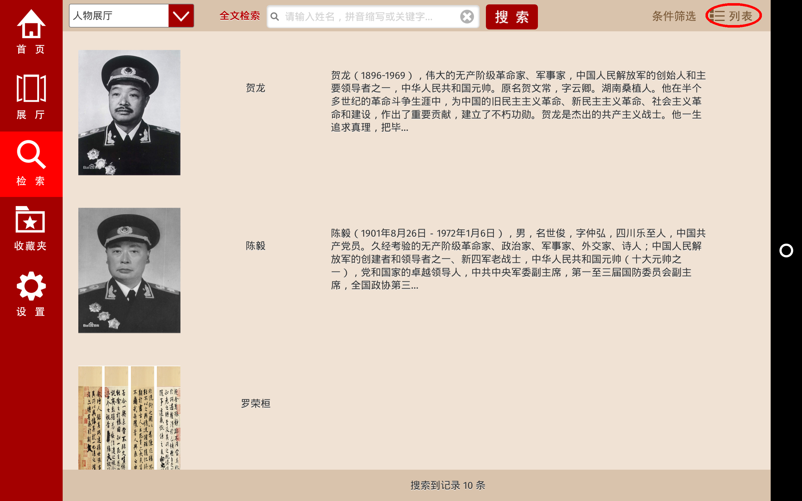

1.首页
当软件打开后呈现首页界面，首页界面作为其他功能界面的初始入口。
1.1点击收藏夹按钮进入收藏夹界面，可查看和编辑收藏文件。
1.2点击设置按钮进入设置界面，可进行相关参数的设置。
1.3 点击帮助按钮进入帮助页面，可以查看本软件的使用说明。
1.4 点击展厅入口图片进入展厅页面
2.展厅页面
进入展厅页面后，侧栏是一些导航栏，可以导航进入相关功能界面，主界面内容为一块展板的内容，同时也会播放相应的展板解说词。

2.1切换展板
左右滑动展板进行展板切换操作。
2.2收藏展板
点击展厅页眉的收藏按钮实现对展板的收藏,可在收藏夹页面查看。
2.3 查看展板页面的图片资料
点击展板上的图片，进入大图+解说词模式。注意，在此时点击该热点图片后，显示结果不仅包括点击的图片而且还包括该点击图片对应的档案中所有的图片文件，例如该热点的名字为00010101.jpg，则显示结果就是档案名为000101下的所有图片文件，例如00010102.jpg，00010103.jpg。
3.检索功能界面
打开应用后，出现展厅选择界面后，点击选择展厅，如果选择展厅是人物展厅，则在做搜索操作后显示的是人物档案的结果，如果选择展厅是非人物展厅，则在此页面生成的是非人物档案的结果。如下图所示：
3.1 人物档案检索功能
进入人物展厅后，搜索界面此时现实的是人物搜索的界面，主要体现在，下拉选择菜单当前指示的是人物展厅，右侧的按钮包括，“条件筛选”与“平铺”。
3.1.1 开始搜索
在全文搜索框内输入关键字，例如‘贺龙’，点击搜索后将会展示出所有关于贺龙的相关档案。
3.1.2 点击生成的档案小图标，进入档案查看界面，
3.1.3 查看档案页面的图片资料
在档案查看页面内点击图片，进入大图查看模式，同时播放针对该图片的解说音频。如果档案图片左上角有表示“多页”的标识则代表该份档案由多份资料构成。左右滑动即可继续查看其他资料图片，当该份档案浏览完毕时自动切换解说音频。
3.1.4 返回检索界面
点击返回图标，返回检索界面。

3.1.5 条件搜索功能
在搜索界面点击条件筛选按钮进入预设条件搜索模式,在预设条件里面点击选择搜索条件，例如‘元帅’。而且可以平铺和列表模式进行切换。搜索结果动态加载,当滑动到页面底部时会自动加载下18条数据。
 3.2 非人物档案检索功能
如果当前进入的展厅是普通展厅则可以直接进行普通搜索，如果进入的不是普通展厅，则可以进行手动切换进入普通展厅搜索模式。如下图
3.2.1 开始搜索
进入检索页面，我们会发现此时的界面已经和人物搜索模式有了区别，主要体现在下拉选择菜单会显示为普通展厅，条件筛选按钮被隐藏。
搜索执行：输入检索关键字（已经实现分词搜索），输入完后，点击“搜索”，出现搜索结果页面如下图所示：
搜索结果中包含各个档案，档案中包含图片、视频、音频等资料。点击其中一个档案浏览资料（如档案中包含图片，会选择第一张图片作为缩略图，如没有，则用一张默认图片作为缩略图）。
3.2.2 非人物档案展示
应用会打开该份档案中所有的文件，并显示出来，如果其中包含音频文件，则该音频文件会作为档案文件展示时的解说音频，显示结果如下图所示：
4 收藏夹操作页面
点击导航栏的‘收藏夹’按钮进入收藏夹操作页面。
4.1 编辑收藏夹文件
点击编辑按钮，进入收藏夹文件编辑模式。可以单选或者全选进行文件的选中，然后进行删除操作。
4.2 删除选中文件
点击删除按钮后，会将选中的文件进行删除。
5.设置界面
点击导航栏的设置按钮，进入设置界面，在设置界面可以进行解说语音音量，背景音乐音量，音乐更换，屏幕亮度等参数与选项的调节,字体大小调节主要针对档案查看界面，以及大图模式的说明词。